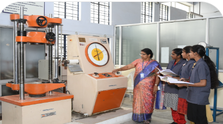

-
The Department of Civil Engineering was started in the academic year 2009 with a sanctioned intake of 60.
The Department has well equipped laboratory facilities and a team of highly qualified faculty experienced in
diversified fields of Civil Engineering The Department is specifically aiming to train the students through in plant
training and industrial visits to make awareness among the students on the field problems of the construction industry.
Students are encouraged to actively participate in co curricular and extra curricular activities. Department Conducts
various placement activities such as training on Aptitude Skills, Technical skills and Refresher courses
on subjects relevant to meet the industrial demands in addition to the various training programmes organized by the Training & Placement Cell